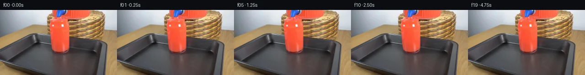

![首帧]()

Round 00
2026-11-05T05:34:44.326559+00:00像素候选变化代码 +198/−0inspection 更新
pixels dc15cbaf9a26f1ad · code 29ca93cf77e407ac
查看本轮 generate.py 真实 diff
--- previous/generate.py
+++ current/generate.py
@@ -0,0 +1,198 @@
+"""PixelWorld continuation made with local, analytic RGB operations only."""
+from pathlib import Path
+import json
+import numpy as np
+from PIL import Image, ImageDraw
+from scipy.ndimage import map_coordinates, gaussian_filter
+
+from artifact_io import save
+
+ROOT = Path(__file__).resolve().parent
+W, H, S = 256, 144, 4
+SOURCE = np.asarray(Image.open(ROOT / 'first_frame.png').convert('RGB'))
+BASE = SOURCE.astype(np.float64)
+Y, X = np.mgrid[:H, :W].astype(np.float64)
+HY, HX = np.mgrid[:H*S, :W*S].astype(np.float64)
+HX = (HX + .5) / S - .5
+HY = (HY + .5) / S - .5
+
+
+def down(a):
+ return a.reshape(H, S, W, S, *a.shape[2:]).mean(axis=(1, 3))
+
+
+def smooth(lo, hi, v):
+ z = np.clip((v-lo)/(hi-lo), 0., 1.)
+ return z*z*(3.-2.*z)
+
+
+def apply_layer(frame, color, alpha):
+ """Area-average premultiplied layers, keeping unedited photo pixels exact."""
+ alpha = np.clip(alpha, 0., 1.)
+ color = np.broadcast_to(color, (H*S, W*S, 3))
+ a = down(alpha)
+ rgb = down(color * alpha[..., None])
+ return frame * (1.-a[..., None]) + rgb
+
+
+def liquid_body(frame, seconds, strength):
+ # Reuse photographed liquid texture and shading. Glass glints stay fixed.
+ left = 109.5 + .055 * np.clip(Y-34., 0., 57.)
+ right = 151.3 - .006*np.clip(Y-48., 0., 38.)
+ edge = smooth(left, left+2.0, X) * (1.-smooth(right-2.0, right, X))
+ vertical = smooth(25., 29., Y) * (1.-smooth(87., 92., Y))
+ red = smooth(35., 85., BASE[..., 0]-BASE[..., 1])
+ red *= 1.-smooth(150., 235., np.minimum(BASE[..., 1], BASE[..., 2]))
+ # The two stationary white glass reflections must not swim with the fluid.
+ protection = 1.-np.exp(-((X-136.4)/4.1)**2-((Y-34.2)/5.2)**2)
+ protection *= 1.-np.exp(-((X-115.4)/3.3)**2-((Y-34.1)/4.0)**2)
+ mask = edge * vertical * red * protection * strength
+ depth = np.exp(-np.maximum(Y-26., 0.)/24.)
+ dx = .18*depth*np.sin(.29*(Y-25.)-5.2*seconds)
+ dx += .08*depth*np.sin(.34*X+.14*Y-3.1*seconds)
+ dy = .25*depth*np.sin(.31*X+.17*Y-4.5*seconds)
+ moving = np.stack([map_coordinates(BASE[..., c], [Y+dy, X+dx],
+ order=1, mode='nearest') for c in range(3)], axis=-1)
+ # Small advecting optical modulation; no changes to the vessel silhouette.
+ variation = depth*(.75*np.sin(.65*X+.36*Y-6.*seconds)
+ + .45*np.sin(.43*X-.28*Y-4.8*seconds))
+ moving += variation[..., None]*np.array([.32, 1., .8])
+ return frame*(1.-mask[..., None])+moving*mask[..., None]
+
+
+def surface(frame, seconds, strength):
+ # A very small level rise because the photographed glass is already filled.
+ rise = 1.55*np.clip((seconds-.25)/4.5, 0., 1.)
+ center_y = 22.5-rise
+ center_x, rx, ry = 130., 18.4, 3.75
+ u = (HX-center_x)/rx
+ v = (HY-center_y)/ry
+ radius = np.sqrt(u*u+v*v)
+ inside = 1.-smooth(.95, 1.035, radius)
+ # Preserve original rim and use the photo's red optical gradient as a base.
+ coord_y = np.clip(HY+rise, 0., H-1.)
+ sampled = np.stack([map_coordinates(BASE[..., c], [coord_y, HX],
+ order=1, mode='nearest') for c in range(3)], axis=-1)
+ color = sampled.copy()
+ # Red surface under a soft studio reflection; perspective compresses rings.
+ shade = np.stack([
+ 247. + 4.5*u - 6.*v,
+ 82. + 7.*u - 10.*v,
+ 60. + 8.*u - 9.*v], axis=-1)
+ color = .57*color+.43*shade
+ distance = np.sqrt(((HX-129.8)/1.)**2+((HY-center_y)/.205)**2)
+ phase = distance - seconds*24.
+ ripples = np.sin(phase*.83)*np.exp(-distance/14.)
+ ripples *= smooth(.65, 2.8, distance)*(1.-smooth(.72, 1.0, radius))
+ color += ripples[..., None]*np.array([1.9, 8.4, 7.1])
… diff truncated; 111 more lines …